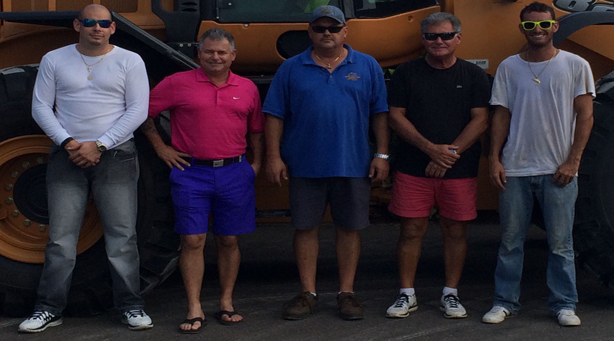

Zane DeSilva
President & CEO
About ICS
Island Construction Services has grown from a specialist excavation business into a multi-division Bermudian heavy-services company supporting residential, commercial, and government work across the island.
Company History
Island Construction has been in business since 1961. Since then ICS has diversified into a multi-operational company. For whatever the need Island Construction almost certainly, can provide it. There is no job too big or small for Island Construction to tackle and complete.
With the opening of Island Quarry in 1991, the business expanded its ability to provide a full range of stone, sand, soil, and boulders. Beginning modestly with only a payloader, compressor, and one jeep, Island Construction grew into one of Bermuda's largest excavating, landscaping, and container haulage companies with a rental fleet of over 50 pieces of heavy machinery.
Island Construction Services Ltd. (ICS) began its business specializing in excavation, demolition, and landscaping. Over the years ICS has become the islands leaders in trenching, asbestos abatement, mould removal, crane services, container haulage, trucking, tree transplanting, aggregate supplies, project management and development. President and CEO Zane DeSilva has teamed up with his brother Allan DeSilva, wife Joanne DeSilva, and life long friend Stephen Moniz to get the company where it is today. Also recently joining the company are other family members Zane DeSilva Jr, Michael DeSilva, Blake DeSilva, and Becca Phillips. Island Construction is almost entirely Bermudian staffed!

Leadership
Leadership at ICS combines long-standing family involvement with practical operational experience across the business.
President & CEO
Senior Vice President
Vice President
Senior Administration Officer
Trenching and Asbestos Abatement
Administration Officer
Where We Are
ICS operates from Devonshire, with quarry operations in Hamilton Parish.
79 Middle Rd, Devonshire, DV 06, Bermuda
Mon - Sat: 7am - 7pm. Closed on public holidays.
9 Coney Island Road, Hamilton Parish, Bermuda
Mon - Sat: 7am - 4pm.
In The Community
ICS has long supported local organisations, events, and community initiatives.
Talk to the ICS team about your next project, material requirement, or specialist service need.